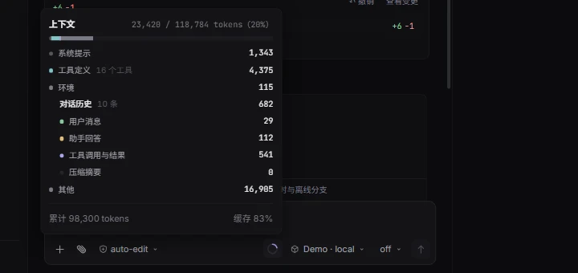
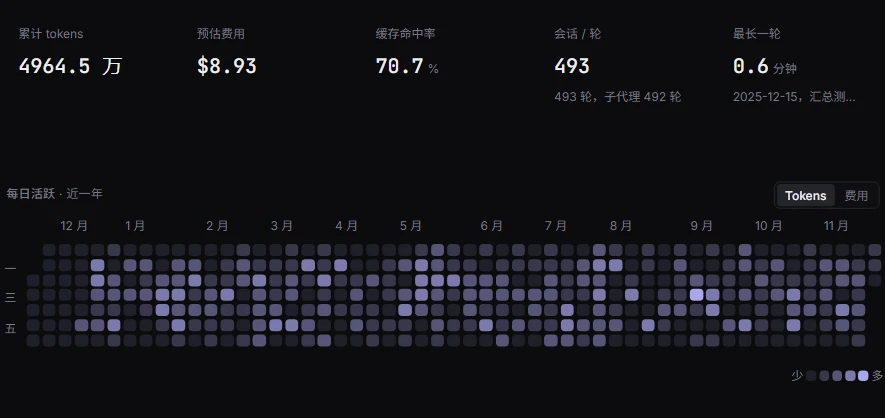

深夜的代码，
交给一个靠谱的同伴。
开源的编码 Agent。桌面、终端、手机，同一套会话。

用量与开放
上下文用量

用量统计

服务商
- ChatGPT
- Grok
- OpenRouter
- Anthropic
- Gemini
- OpenCode Zen
- OpenCode Go
- OpenAI 兼容
开源
下载
Windows 桌面端
安装包未签名，SmartScreen 提示时选「仍要运行」
x64 安装包
macOS 桌面端
Apple 芯片，macOS 14+；首次打开到 系统设置 › 隐私与安全性 点「仍要打开」
Apple 芯片 dmg